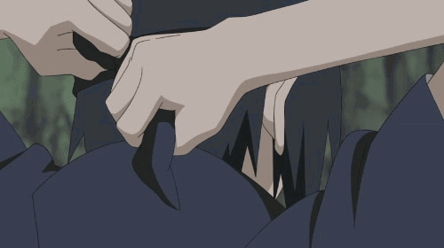

人物介绍
人的命运是像云彩一样只能随风漂流，还是说云彩它自己选择了方向，我现在还不是很清楚。但无论是那种情况，它们都可能漂流往同一个方向，但如果选择了后者的话，人就会朝着自己的人生目标而不断努力，拥有这种想法的人才是真正的强者。（日向宁次）
漩涡鸣人
ナルト
漩涡鸣人：日本漫画《火影忍者》及其衍生作品中的男主角。火之国木叶隐村的忍者，四代目火影波风水门和漩涡玖辛奈之子，六道仙人次子阿修罗转世。刚出生时父母为保护村子而牺牲，并将尾兽“九尾”封印在鸣人体内。成为孤儿的鸣人从小被村民歧视，但在唯一认同他的老师海野伊鲁卡以及三代目火影猿飞日斩的鼓励下有了要成为火影的梦想，让所有人都认同他的存在。成为忍者后，和旗木卡卡西、宇智波佐助以及春野樱组成第七班进行各种任务。为实现梦想，和守护伙伴们的羁绊，鸣人不断修炼变强，作为木叶“三忍”之一自来也的弟子，在追求梦想的过程中不断突破自我，贯彻了自身的忍道，获得人们的认可。最后与忍者联军以及宇智波佐助还有九尾一同终结了战争，为忍者世界带来和平，并实现自己成为火影（七代目火影）和忍界英雄的梦想。
半尾兽化是指身体发生明显变化，但仍保持类人形的状态，同时伴随明显的尾兽查克拉的涌出甚至长出骨骼的状态，覆盖着的尾兽查克拉（多为暗红色）即尾兽衣。这时已可以使用尾兽玉（非完全版）了。鸣人与大蛇丸对战时出现了四条尾巴，与佩恩对战时出现了六条甚至八条尾巴的情况。
九尾查克拉模式在取出九尾查克拉并以六道忍术重新封印后，鸣人能够选择使用尾兽查克拉或自身查克拉，在使用尾兽查克拉时身上会出现六道仙人的勾玉及印记、脸上也浮现花纹，尾兽的查克拉包裹全身令其身体变成金色，特定范围内可以发出极快的速度，能够追上四代目雷影·艾，力量也有所提升，并可以通过他人恶意、善意感知敌我区分情况，可变出很多查克拉之手。
九喇嘛模式在与带土的战斗中，九尾被鸣人感化，两人互相理解， 人柱力和尾兽合为一体，鸣人成为完美人柱力，可完全操控九尾的力量，九尾模式成为完全形态。
六道仙人模式鸣人在成为全部尾兽的人柱力并获得六道仙人力量馈赠之后，开启的新模式。与之前的“仙狐模式”类似，但战斗力却不可同日而语。开启此模式后，可以使用“六道仙术”、“阴阳遁之术”、“尾兽之力”等多种神奇的力量，也可以使用原本仙人模式和九喇嘛模式的全部能力，可以轻松的控制其他尾兽的查克拉，从而使出更多不同属性的招式。
宇智波佐助
うちは サスケ

宇智波佐助：日本漫画《火影忍者》及其衍生作品中的男二号。火之国木叶隐村宇智波一族的天才忍者，六道仙人长子因陀罗的转世者。 年幼时因目睹宇智波一族被哥哥鼬所歼灭，从而走上复仇之路。在终末之谷与漩涡鸣人展开激战，将鸣人打败后叛离木叶前去追随大蛇丸。三年后，佐助将大蛇丸吸收到异空间，并成功打败宇智波鼬，但从面具男口中得知了宇智波鼬的灭族真相，于是决定摧毁木叶。 后来，佐助与秽土鼬相遇打败药师兜。因此，佐助的想法再次发生了变化，为了进一步了解忍者、家族、哥哥的过去，佐助与四位火影进行交谈，在听完他们的回答后决定继承鼬的意志守护木叶，并希望成为火影改变木叶的政治体制。 第四次忍界大战结束后，佐助因对于维护世界和平的道路选择和鸣人不同，而在终结之谷与鸣人进行了最后一战，结果两人各断一条手臂。最终佐助被鸣人感化，认同了鸣人的道路，终于回归木叶，并重新成为木叶的一员。 此后佐助独自一人环游忍界，暗中默默地守护着木叶。
强大意志他以第一名的成绩在忍者学校毕业，是全村最为期待的头号优等生。“我可是拼了命去做的，不要用‘天才’两个字抹杀掉我的努力！”这是佐助对自己的诠释。
外冷内热他深爱家人，但并不把这份感情挂在嘴边，而是低调地赋予实际行动。为了获得父亲认可，他在忍者学校努力修炼，取得了优异的成绩。当看到父亲与哥哥之间冷战，年幼的佐助不知内情，但渴望父亲和哥哥解除误会，维护家庭和谐。正是基于对家庭、家族的那份爱，佐助在遭遇灭族后，人生发生转变。面对一夜间死去的族人，佐助内心无比伤感、愤怒，从此将内心封闭起来，一心希望获得强大的力量，早日为宇智波一族报仇雪恨。
独立纯粹
因为自己被鼬打败，使佐助意识自己力量的不足，为了向鼬复仇，佐助义无反顾地选择了来到大蛇丸身边，他无法容忍自己力量的弱小，毅然决然地选择离开木叶获得强大的力量。那时候的佐助，为了复仇甚至不惜杀死与自己同生共死的香燐，可以说，当时的他是一个不折不扣的复仇者。
再次与鼬相遇后，佐助的思想得到了升华，他不再纠结于复仇本身，而是想知晓一切，靠自己得出结论，以自己的意志和双眼去辨清结论。鼬也承认了佐助的力量，在灵魂升天前对佐助说：“或许如今的你，能改变父母，改变宇智波。”这也是大蛇丸被佐助复活后，选择帮助佐助的根本原因：想要见证一个不同于自己，属于佐助的生存方式以及未来。
春野樱(春野サクラ)日本漫画《火影忍者》及其衍生作品中的女主角。新一代医疗忍者，五代目火影纲手的弟子，与漩涡鸣人、宇智波佐助隶属于旗木卡卡西领导的第七班。 原本性格柔弱任性，在木叶忍者学校成绩不错。在佐助叛离木叶村后，拜第五代火影纲手为师，学会优秀的体术，怪力和医疗忍术。第四次忍界大战中作为忍者联军第三部队以及医疗后勤部队的一员。 具有良好的查克拉控制能力与清晰的头脑，擅长体术怪力与医疗忍术以及解除幻术（拥有幻术天赋，早期设定是幻术型忍者）。经过自己艰苦卓绝的努力奋斗，最终成长为一个贯彻自己座右铭“勇气”的优秀忍者。
旗木卡卡西(はたけ カカシ)火之国木叶隐村的精英上忍，原木叶暗部成员，四代目火影波风水门的弟子，第七班队长，漩涡鸣人、宇智波佐助、春野樱的老师。年仅12岁就成为上忍的天才忍者，后左眼移植宇智波带土的写轮眼，因使用写轮眼复制了上千种忍术而被称为“拷贝忍者”、“写轮眼卡卡西”，其名号响彻各国。 第四次忍界大战中，写轮眼不幸被宇智波斑夺去，所幸被鸣人使用阴阳遁将左眼复原。带土临死前通过查克拉将写轮眼再次赋予卡卡西而可以短暂使用完整的万花筒写轮眼力量，能够开启完全体须佐能乎，并借此在最终决战与第七班三位弟子一起将大筒木辉夜封印。战争结束后成为了六代目火影。
我爱罗(ガアラ)，日本漫画《火影忍者》及其衍生作品中的角色。风之国·砂隐村的第五代风影。小时候由于体内封印着一尾守鹤而被村人害怕，又因为至亲之人的背叛而导致性格变得冷酷无情、喜好杀戮，但在和漩涡鸣人一战后，由于鸣人的影响而逐渐摆脱心魔。 之后我爱罗成为第五代风影，领导并守护着砂隐村，但一度被“晓”抽去了一尾守鹤而死亡，最后被千代牺牲性命复活。第四次忍界大战中，我爱罗担任忍者联军队长与第四部队统领。战争结束后，我爱罗仍继续担任风影的职位，还和鸣人及木叶村等人维持着友好的关系。

宇智波鼬(うちは イタチ)宇智波鼬代表的是日本神话中天照大御神的使者八咫鸦，（在日本传说中三只脚的乌鸦，具有忠贞、勇敢、无畏精神，同时也是中国古代传说中被后羿射日射下来的太阳神鸟）也可以是天照大御神本人！ 鼬总是释放乌鸦幻术，（为了纪念宇智波止水）并且也使用的耗费查克拉少量的乌鸦分身。在日本神话中，现世的管理者是天照大御神，常世的管理者是月读命，素盏鸣尊（须佐之男）曾凭十拳剑斩杀八岐大蛇，从其尾部抽出草薙剑。但是，须佐之男并没有八咫镜，八咫镜是天照大御神的。 宇智波鼬正是八咫鸦的化身，秽土转生状态下扭转了战局，并且以自己的方式引导着第四次忍界大战走向胜利
波风水门(なみかぜ みなと)木叶隐村的四代目火影，在第三次忍界大战结束后不久继任。黄发蓝瞳，平时经常身穿写有“四代目火影”字样的披风，有着宽容温厚的个性。由于在战斗中常以速度取胜，而有着“黄色闪光”的称号，亦以此在忍界中扬名，是第三次忍界大战中木叶的功臣之一。在以生命为代价封印九尾拯救村子后，被称之为守护木叶的英雄。
奈良鹿丸(奈良シカマル)奈良鹿丸，日本漫画《火影忍者》及其衍生作品中的角色。火之国木叶隐村的忍者，拥有出众的应敌策略，头脑冷静、随机应变，IQ超过200。绝招是“影子模仿术”，他的性格虽然消极了点，但是想要平静的生活，擅长使用奈良一族秘传忍术。 与父亲奈良鹿久一样深受历代火影信任。第四次忍界大战结束后，先后担任六代目火影·旗木卡卡西与七代目火影·漩涡鸣人的得力亲信。
日向雏田(日向ヒナタ)日向雏田，日本漫画《火影忍者》及其衍生作品中的女性角色，火之国木叶隐村的忍者，木叶名门日向一族宗家的嫡长女，大筒木羽村的后代之一，拥有纯度极高的白眼，被舍人和大筒木一族的亡魂们称为“白眼的公主”。